The feel
Raypunk is the future as the pulps and the Sunday comics sold it. For 25 cents, the first issue of Amazing Stories offered "a charming romance intermingled with scientific fact and prophetic vision" behind a lurid painted cover,1 and Frank R. Paul's covers helped define the look of the future with enormous cities and vehicles in bright, basic colours.2 The Buck Rogers strip supplied the kit: antigravity belts, death rays, disintegrators, domed cities and space rockets.3
It works because the cover had to sell the magazine.4 There were so many pulp titles on the newsstand that artists had to make the most startling images they could, and a good cover told its story in a flash.4 Games still borrow the look. The Outer Worlds fills its space frontier with people and places that evoke pulpy serials and comic books,5 and The Invincible's art director drew on book covers from Stanisław Lem's era and aimed for "warm, vibrant, and bright colours".6
- gee-whiz
- streamlined
- hand-inked
- two-fisted
- newsstand
- wide-eyed
Where it comes from
Hugo Gernsback's Amazing Stories, the first magazine devoted to science fiction, launched with an issue dated April 1926,1 and Frank R. Paul painted all its covers for Gernsback's three years as editor, in effect creating science fiction art and the conventions later artists would follow or rebel against.7 Buck Rogers first appeared in Amazing in August 1928, became a newspaper strip in 1929 and a colour Sunday strip in 1930, and Alex Raymond's Flash Gordon, a Sunday page for King Features, was created in 1934 to compete with it.8,9 The name raygun Gothic comes from William Gibson's 1981 story "The Gernsback Continuum", where a character uses it for "American Streamlined Moderne", the "futuristic" architecture of the 1930s and 1940s.10 The story is the earliest recorded use of the term.11
Core elements
Liner-shaped rocket ships
Paul and his contemporaries drew spaceships as bulbous machines, like bloated aeroplanes or rounded ocean liners with long rows of portholes, often with jets of flame or vapour behind them to suggest speed.12 Streamlined hulls and elegant fins came slowly, following the sleeker cars of the real world rather than any understanding of rocket power.12
The ray gun
The hand-held energy weapon became one of science fiction's best-known clichés in the pulp era, firing death rays, disintegrator blasts or stunning beams.13 The guns drawn in the Buck Rogers strip were too intricate to make, so Dick Calkins redesigned them for Daisy's XZ-31 Rocket Pistol of 1934, the forerunner of every toy ray gun since.8
Streamlined chrome
Streamlining was a prominent design idea of the 1930s, applied to pencil sharpeners as well as trains and cars: Raymond Loewy's 1933 sharpener, though static, "has the look of a dynamic mode of transportation".14 Gibson sums up the decade's dream as "white marble and slipstream chrome, immortal crystal and burnished bronze", and his imagined airliner flies low enough to count "the rivets in its dull silver skin".10
Brightly coloured alien worlds
The first Amazing Stories cover shows people skating on a comet with Saturn hanging behind them.15 Paul went on to paint a flying city over the Earth against a pink sky and a series of back covers showing life on other planets, all in bright, almost garish colour.7 Flash Gordon mixes death rays and rocket ships with dinosaurs and swordplay "with a fine contempt for plausibility".9
Art deco future cities
Paul trained as an architect, and his future cities, with their "sensuously curving lines", are "an exotic amalgam of Byzantium and the local movie palace, owing something to the Art Deco movement".16 Buck Rogers had domed cities,3 and Raymond drew Mongo's futuristic architecture in imitation of Franklin Booth, a turn-of-the-century artist.17
Pulp and newspaper printing
Pulp pages were the cheapest wood-pulp paper a press could take, but the covers were printed in colour on coated stock because the art sold the magazine.4 Paul's red and yellow backgrounds owe something to Gernsback's thrifty three-colour printing.7 Sunday strips were coloured at the engraver's, where Ben Day craftspeople followed the artist's colour guide and laid dot tints for cyan, magenta and yellow onto the printing plates.18
How to do it
Focus the detail on machines
Early science fiction focused on "the big, dumb, fascinating object", and its characters "were just around to witness that".1 Paul's cities and machines were lovingly detailed, while his human figures could look "stiff and simplistic", and it hardly mattered.7
Draw a liner-shaped ship
Draw a bulbous hull, like a bloated aeroplane or a rounded-off ocean liner, give it long rows of portholes and put a jet of flame or vapour behind it for speed.12 For a later look, streamline the hull and add fins, as illustrators did once real cars grew sleeker.12
Use 1930s architecture as reference
Gibson's photographer hunts for the "futuristic" architecture of the 1930s and 1940s: movie marquees "ribbed to radiate some mysterious energy" and dime stores faced with fluted aluminium.10 His California gas stations are "raygun emplacements in white stucco", with central towers ringed by radiator flanges, "a signature motif of the style".10
Ink with feathered strokes
Feathering is a series of fine brush or pen strokes that build a contour, and Raymond refined it further than any other strip artist.19 By the end of 1934 his strokes were "orchestrations of tiny parallel lines", like a brush nearly dry of ink, though he usually kept enough ink on it for a liquid sheen.17 Brush shading into the landscape as well, as he did on Mongo, to give it texture.17
Use fewer, larger panels
Raymond started Flash Gordon on four tiers of panels, soon cut it to three, and by 1936 drew it on two, with every panel at least twice its first size.17 The bigger panels let his backgrounds grow more lavish.17
Colour with Ben Day dots
Ben Day tints of around 55 dots to the inch suited the newsprint Sunday sections, printed in cyan, magenta, yellow and black.18 On strips such as Tarzan, every colour's dots sat at the same angle.18 Set your halftone's frequency in lines per inch, where larger values give smaller dots, and the angle of its dots, so you can match both.20
Render the chrome and the sky
In a physically based material, give bare metal a metallic value of 1 and painted panels 0, split with a black and white mask; a roughness of 0 gives a mirror finish.21 The Invincible's chrome mirrors the environment's cube map, putting vivid colour into the reflections against the matte sand.6 Colour the fog from a cube map of the painted sky, so distant scenery matches the sky.22
Cheat sheet
- Silhouette
- Bulbous liner with rows of portholes, later streamlined, with fins12
- Hull
- Metallic 1 on bare metal, 0 on paint, roughness 0 for mirror chrome21
- Rays
- A hand-held death ray, disintegrator or stunner13
- Exhaust
- A jet of flame or vapour, as much to show speed as thrust12
- Dots
- Ben Day tint, around 55 dots to the inch, one angle for every colour18
- Cover lines
- 25 cents, and a slogan such as "Extravagant Fiction Today … Cold Fact Tomorrow"1
Do
Avoid
- Grime and decay. The 1930s dream future "knew nothing of pollution".10
- Hardware built for vacuum, with no streamlining. Sleek, streamlined ships held their ground in magazine art until the 1970s.12
- Airbrushed gradients on comic-strip art. 1930s Sunday pages were coloured with Ben Day tints, and process colour did not reach them until decades later.18
- Copying the old stereotypes. Buck Rogers fought "Mongol" hordes that reflected the "yellow peril", and Flash Gordon's Ming the Merciless was another Asian enemy.8
- Taking the dream at face value. Gibson's narrator finds its perfect citizens "white, blond" and "smug", with "all the sinister fruitiness of Hitler Youth propaganda".10
Tools and tutorials
- Pulp Magazine Archive
Thousands of scanned pulps, free to read at the Internet Archive.
- Frank R. Paul on Wikimedia Commons
Public domain covers in high resolution.
- Digital Comic Museum
Public domain Golden Age comics to study and redraw.
- Krita artistic filters
A free halftone filter for a quick printed-dot look.
- Clip Studio Paint
Tone layers turn a layer into dots at the frequency and angle you set.20
- Ben Day process
How dot tints work, and why they look the way they do.
- Physically Based Materials
Metallic and roughness values for bare metal, paint and mirror chrome.21
Palette
Sampled from Frank R. Paul's August 1928 cover, Alex Raymond's rocket fleet, The Invincible and The Outer Worlds. The lower half of each chip shows that ink as a Ben-Day tint. Press any chip to copy it.
Feel the vibe
Listen
The first entirely electronic score in a commercial film.23
YouTubePlay it with the finned silver rocket on the Destination Moon poster in the gallery.
YouTubeFrom I Hear a New World, Meek's "Outer Space Music Fantasy" of life on another planet, made at home in his flat.24
YouTubeListen for how the synth riff and the shouted name announce a comic-strip hero.
YouTubeThe title theme of a game set on a frontier planet, with a Wild West feel and a science fiction vibe.5
YouTubeIts sound team avoided a "hi-fi, cyber futuristic feel" in favour of older technology like radio and tape.25
YouTube
More references
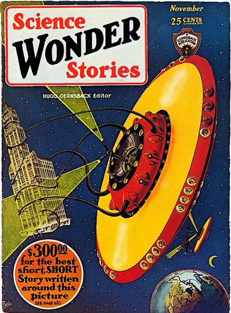
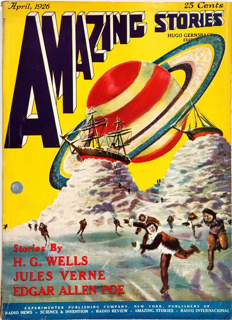
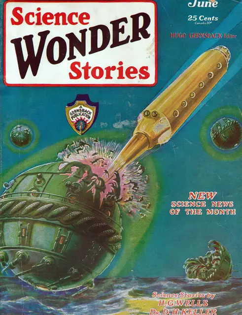
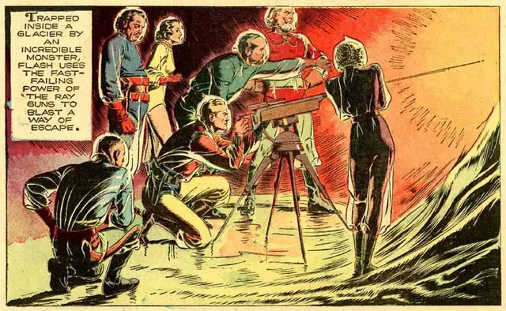
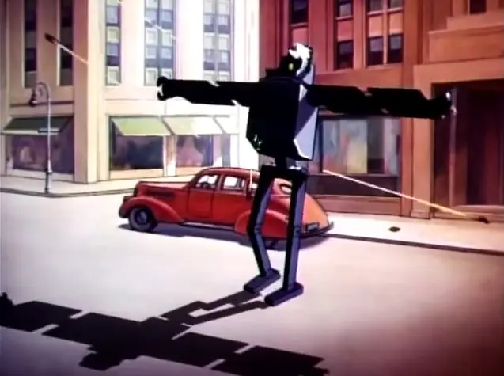
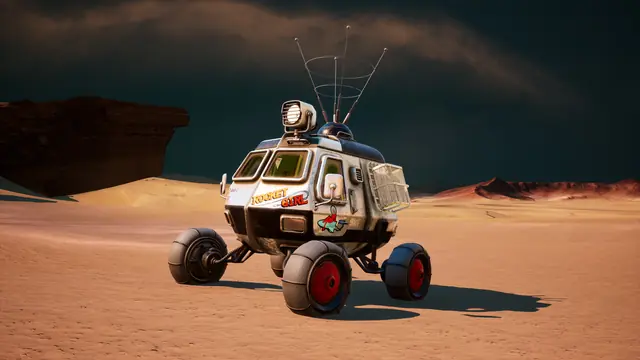
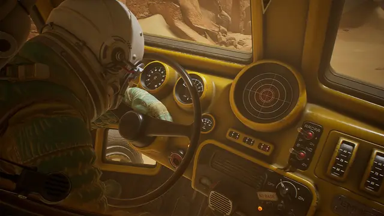
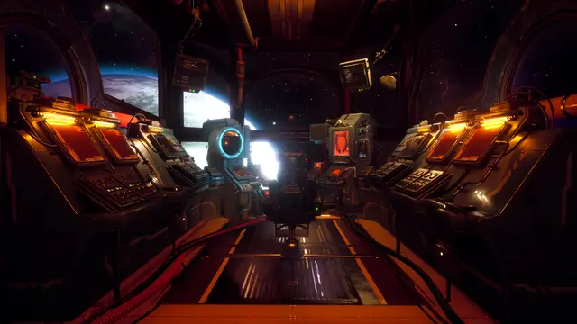
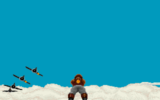
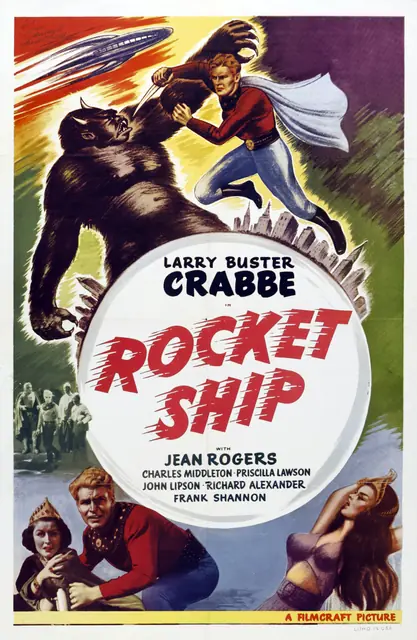
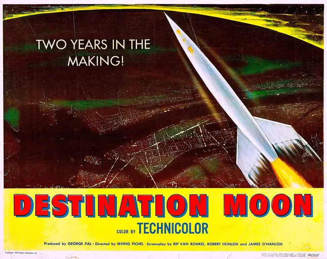
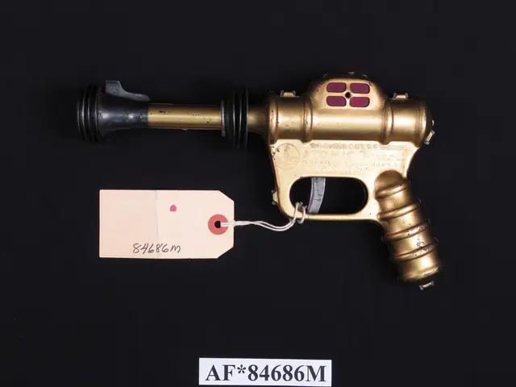
Games
- Rocket Ranger
Study its rocket-pack hero and its film-serial staging.
- The Outer Worlds
Each corporation has its own colour scheme, and loading screens look like newspaper prints.5
- Destroy All Humans!
Study its saucers and ray guns, played for comedy.
- The Invincible
Study its chrome, which mirrors the planet around it, against the matte sand.6
Film, art and more
- Amazing Stories
The first magazine devoted to science fiction.1 Start with its covers.
- Frank R. Paul
The founding father of science fiction art, known for enormous cities and vehicles.2
- Flash Gordon
Raymond refined feathering further than any other strip artist.19 Study his rockets and palaces.
- Buck Rogers
The strip behind Daisy's 1934 XZ-31 Rocket Pistol, the forerunner of all later toy ray guns.8
- Superman shorts
Study the giant robots and the deep shadows.
- Forbidden Planet
Study the Krell machines, which dwarf the humans walking among them.23
- Dan Dare
Study its spacecraft and its colour.
- The Gernsback Continuum
William Gibson's story, the earliest recorded use of "raygun Gothic".11
Sources
- 1Before sci-fi was everywhere, this pioneering magazine championed 'scientifiction'
- 2Frank R. Paul
- 3Buck Rogers in the 25th Century
- 4Guys and Molls
- 5The Story Behind The Outer Worlds' Amazing Art
- 6Making The Invincible: crafting its "painterly unrealism"
- 7Paul, Frank R
- 8A Christmastime Price War – Over a Toy Ray Gun
- 9Flash Gordon
- 10The Gernsback Continuum
- 11Raygun Gothic n.
- 12Spaceships
- 13Ray Gun
- 14It's a bird! It's a plane! No, it's - an office tool
- 15My Personal Time Machine: Amazing Stories' First Year (part 1)
- 16Illustration
- 17Alex Raymond and the Right Stuff
- 18Ben Day Dots, Part 6.1: Tarzan & the Ben Day Dots
- 19Raymond, Alex
- 20Layer properties
- 21Physically Based Materials
- 22Exponential Height Fog
- 23Forbidden Planet
- 24At 60 Years Distance, Joe Meek's 'I Hear a New World' Still Sounds Unique
- 25Unreal Engine powers stylish stellar mystery The Invincible